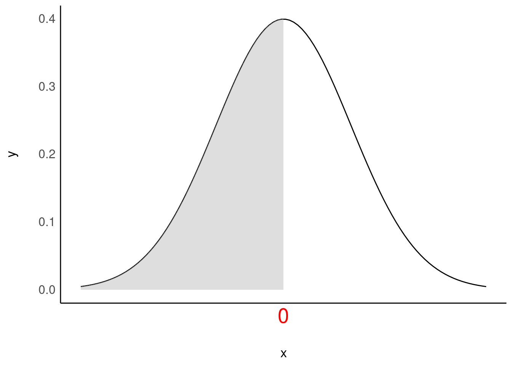
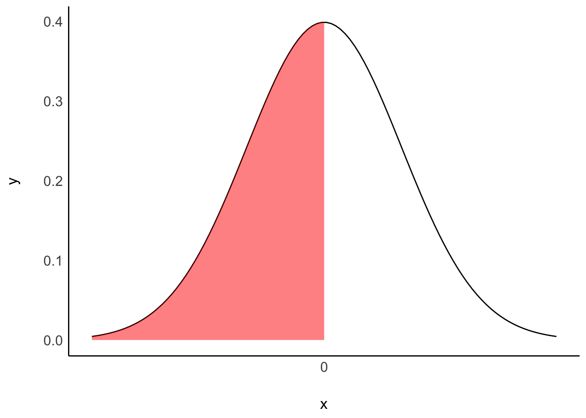
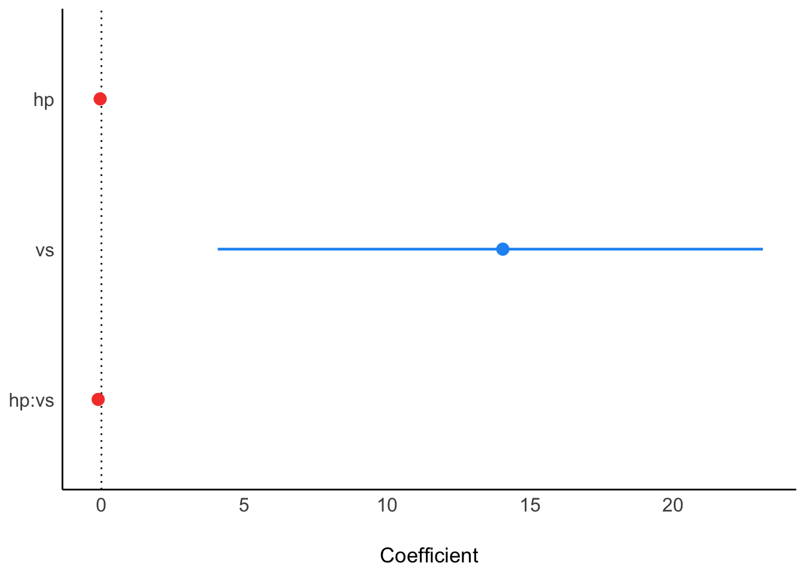
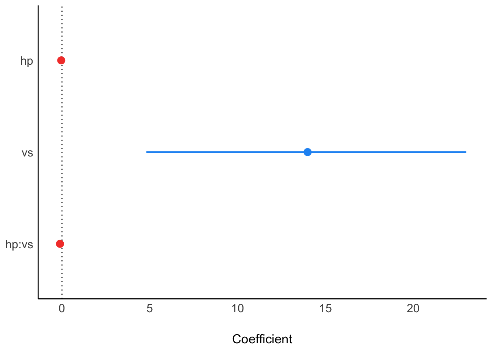
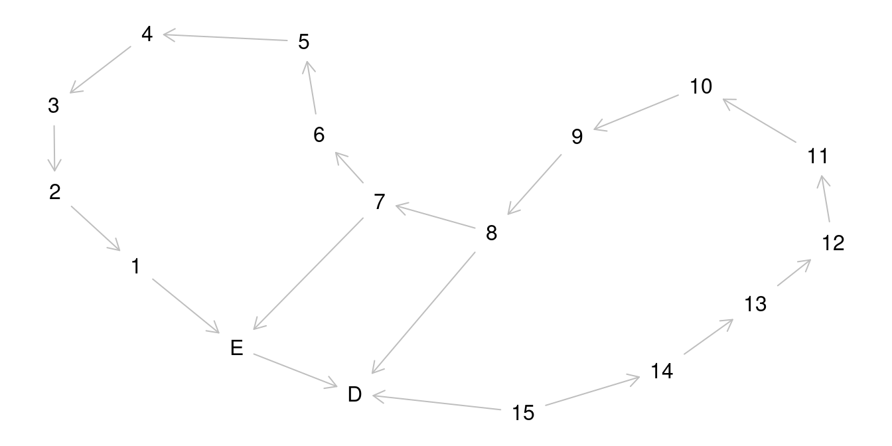
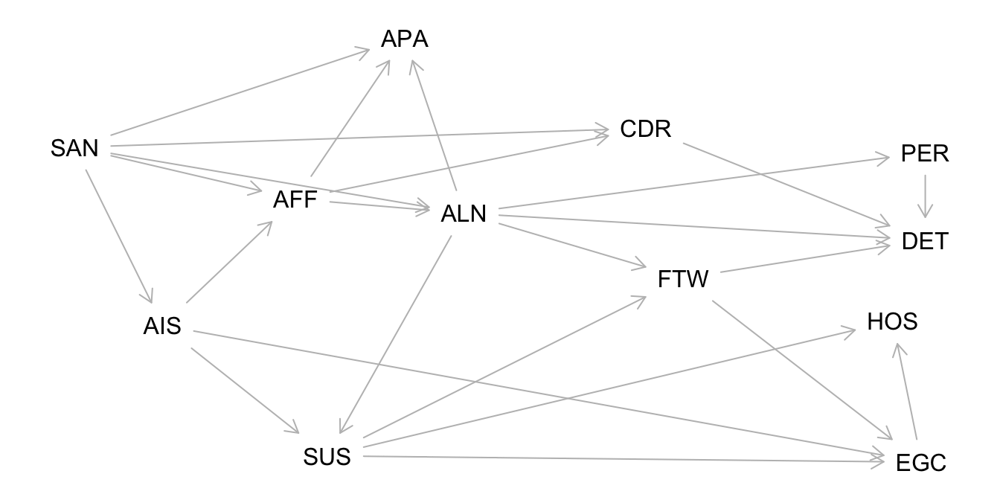

Code
library(tidyverse)
library(easystats)
library(rstanarm)In diesem Kapitel benötigen Sie folgende R-Pakete.
library(tidyverse)
library(easystats)
library(rstanarm)Lieblingsfehler im Überblick 🤷:
Berechen wir das Standard-mtcars-Modell: mpg ~ hp.
m1 <- stan_glm(mpg ~ hp, data = mtcars, refresh = 0)Die Post-Verteilung zeigt Stichproben zu den Parameterwerten.
post_verteilung <- m1 %>%
as_tibble()
head(post_verteilung)| (Intercept) | hp | sigma |
|---|---|---|
| 29.46483 | -0.0726772 | 4.065667 |
| 30.28192 | -0.0646532 | 3.496495 |
| 32.41463 | -0.0747690 | 4.647087 |
| 28.34458 | -0.0653787 | 3.833117 |
| 28.75310 | -0.0641837 | 3.798706 |
| 30.57290 | -0.0720035 | 3.729606 |
Die Posterior-Prädiktiv-Verteilung (PPV) zeigt die Vorhersagen, also keine Parameterwerte, sondern Beobachtungen.
| name | value |
|---|---|
| Mazda RX4 | 15.12744 |
| Mazda RX4 Wag | 26.18068 |
| Datsun 710 | 22.60418 |
| Hornet 4 Drive | 16.04017 |
| Hornet Sportabout | 18.41473 |
Ein \(p\)-Quantil teilt eine Verteilung in zwei Teile, und zwar so, dass mind. \(p\) kleiner oder gleich dem \(p\)-Quantil sind.

Das 50%-Quantil (.5-Quantil) beträgt \(x=0\). Mind ein Anteil \(1-p\) ist größer oder gleich dem \(p\)-Quantil.
\(F(x)\) gibt die Wahrscheinlichkeit an der Stelle \(x\) an, dass \(X\) einen Wert kleiner oder gleich \(x\) annimmt.

\(F(0)=1/2\), die Wahrscheinlichkeit beträgt hier 50%, dass \(x\) nicht größer ist als 0.
Berechnen wir ein einfaches Interaktionsmodell: mpg ~ hp*vs.
Zur Erinnerung: mpg ~ hp*vs ist synonym zu (aber kürzer als) mpg ~ hp + vs + hp:vs.
m2 <- stan_glm(mpg ~ hp*vs, data = mtcars) # mit InteraktionseffektModellkoeffizienten:
parameters(m2)| Parameter | Median | CI | CI_low | CI_high | pd | ROPE_Percentage | Rhat | ESS | Prior_Distribution | Prior_Location | Prior_Scale |
|---|---|---|---|---|---|---|---|---|---|---|---|
| (Intercept) | 24.5850953 | 0.95 | 19.2689378 | 29.8246251 | 1.00000 | 0.0000000 | 1.001311 | 2558.345 | normal | 20.09062 | 15.0673701 |
| hp | -0.0418830 | 0.95 | -0.0685393 | -0.0146628 | 0.99825 | 1.0000000 | 1.000711 | 2557.510 | normal | 0.00000 | 0.2197599 |
| vs | 13.9078702 | 0.95 | 5.3600215 | 22.7633775 | 0.99925 | 0.0000000 | 1.003683 | 1594.565 | normal | 0.00000 | 29.8946190 |
| hp:vs | -0.1109452 | 0.95 | -0.1903810 | -0.0306736 | 0.99800 | 0.3928947 | 1.002989 | 1732.584 | normal | 0.00000 | 0.3094788 |
plot(parameters(m2))
Falsch 😈 Der Unterschied im Verbrauch zwischen den beiden Gruppen vs=0 und vs=1 beträgt ca. -0.11.
Richtig 👼 Der Unterschied im Verbrauch zwischen den beiden Gruppen vs=0 und vs=1 beträgt ca. -0.11 – wenn hp=0.
Da hp=0 kein realistischer Wert ist, ist das Modell schwer zu interpretieren. Zentrierte Prädiktoren wären hier eine sinnvolle Lösung.
Gelman, Hill, und Vehtari (2021),Kap. 10, McElreath (2020), Kap. 8
Theoretische Phase 1. Staunen über ein Phänomen, \(y\), Kausalfrage finden 2. Literatur wälzen, um mögliche Ursachen \(x\) von \(y\) zu lernen 3. Forschungsfrage, Hypothese präzisieren 4. Modell präzisieren (DAG(s), Prioris)
Empirische Phase
Analytische Phase
Yeah! Fertig.
Quantitative Studien haben oft einen von zwei (formalen) Zielen: Hypothesen testen oder Parameter schätzen. Beispiel Hypothesenprüfung: “Frauen parken im Durchschnitt schneller ein als Männer”. Beispiel Parameterschätzung: “Wie groß ist der mittlere Unterschied in der Ausparkzeit zwischen Frauen und Männern?”
Je ausgereifter ein Forschungsfeld, desto kühnere Hypothesen lassen sich formulieren: - stark ausgereift: - Die nächste totale Sonnenfinsternis in Deutschland wird am 27.7.2082 um 14.47h stattfinden, Quelle - gering ausgereift: - Die nächste Sonnenfinsternis wird in den nächsten 100 Jahren stattfinden. - Lernen bringt mehr als Nicht-Lernen für den Klausurerfolg. Kühne Hypothesen sind wünschenswert 🦹
Der Mittelwert in Gruppe A ist höher als in Gruppe B (der Unterschied, \(d\), im Mittelwert ist größer als Null):
\[\mu_1 > \mu_2 \Leftrightarrow \mu_1 - \mu_2 > 0 \Leftrightarrow \mu_d > 0\]
Berechnen wir wieder ein einfaches1 Modell: mpg ~ hp.
m3 <- stan_glm(mpg ~ hp, data = mtcars)Und schauen wir uns die Post-Verteilung an, mit eingezeichnetem HDI:

Ein Zusammenfassen der Posterior-Verteilung (z.B. zu einem 95%-PI) ist möglich und oft sinnvoll. Verschiedene Arten des Zusammenfassens der Post-Verteilung sind möglich, z.B. zu Mittelwert oder SD oder einem einem HD-Intervall. Allerdings übermittelt nur die gesamte Post-Verteilung alle Informationen. Daher empfiehlt es sich (oft), die Post-Verteilung zu visualisieren.
\[\text{Posteriori} = \frac{\text{Likelihood} \times \text{Priori}}{\text{Evidenz}}\]
🌬🚙🙋️👨⬅️Hans 👧⬅️Anna 👩⬅️Lise
Puh, wie erstelle ich für alle Studis ein anderes Rätsel2?
In einer Open-Book-Prüfung bekommen alle Studentis eine eigene, jeweils andere Prüfung. Teamarbeit bleibt natürlich trotzdem untersagt.

❓Geben Sie die minimale Adjustierungsmenge (minimal adjustment set) an, um den totalen (gesamten) Effekt von E auf D zu bestimmen!
❗ Entweder ist die Menge {A,Z} zu adjustieren oder die Menge {B,Z}.

Minimale Adjustierungsmenge, um den Effekt von E auf D zu identifizieren: {7}, {8}.
The SSQ model of schizophrenic prodromal unfolding revised:
An analysis of its causal chains based on the language of directed graphs
D. van Kampen
Lesen Sie hier den Abstract.
Folgende Symptome der Schizophrenie wurden gemessen:
Social Anxiety (SAN), Active Isolation (AIS), Affective Flattening (AFF), Suspiciousness (SUS), Egocentrism (EGC), Living in a Fantasy World (FTW), Alienation (ALN), Apathy (APA), Hostility (HOS), Cognitive Derailment (CDR), Perceptual Aberrations (PER), and Delusional Thinking (DET)
Kampen (2014)
UV: SUS, AV: EGC
Berechnen Sie die minimale Adjustierungsmenge, um den kausalen Effekt der UV auf die AV zu identifizieren!

Minimales Adjustment-Set für den totalen Kausaleffekt: {AIS, ALN}
Stellen Sie sich auf Aufgaben ein, in denen Sie Modellparameter berechnen sollen. Orientieren Sie sich an den Aufgaben und Inhalten des Unterrichts.
Prüfungsfragen zu Modellen könnten z.B. sein:
🥳🏆